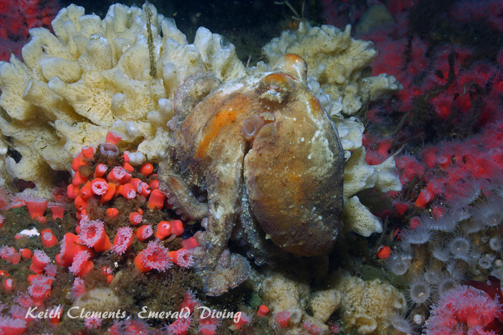
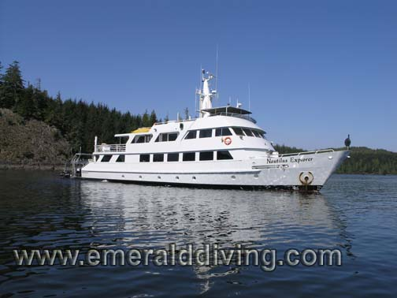
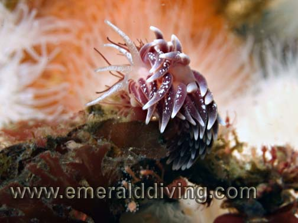
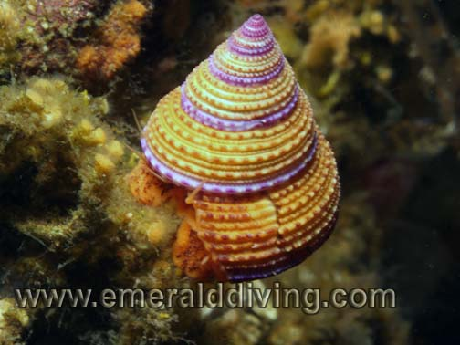
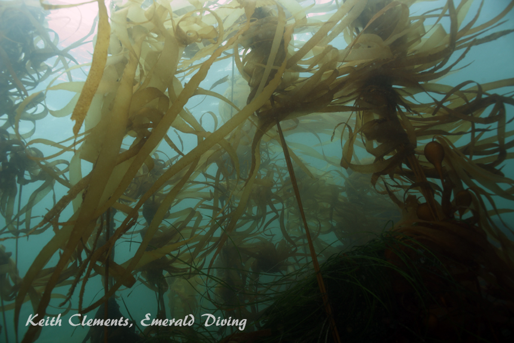
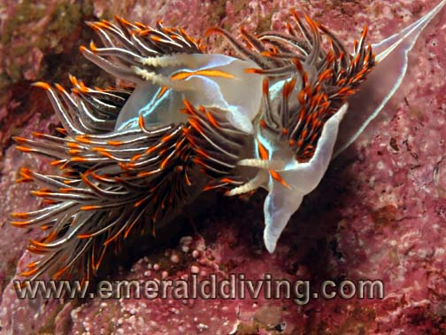
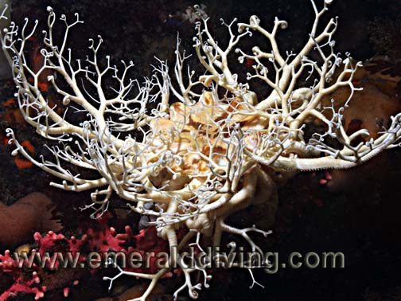
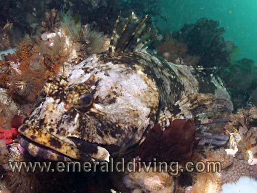
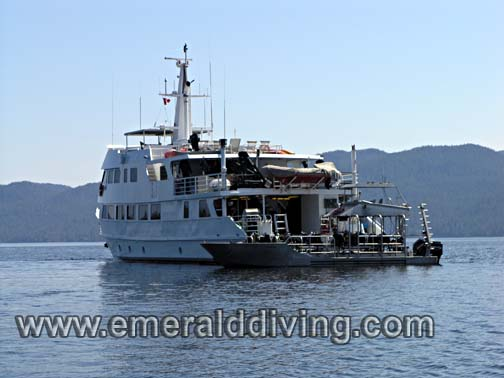
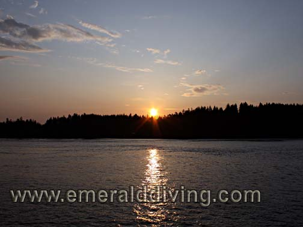

<!doctype html>
<html>
<head>
<meta charset="utf-8">
<title>Emerald Diving:  Nautilus 6.09</title>
<meta name="generator" content="WYSIWYG Web Builder - http://www.wysiwygwebbuilder.com">
<link href="Emerald_Diving.css" rel="stylesheet">
<link href="Nautilus_06.01.09.css" rel="stylesheet">
<script>
function onChangeGoMenu1(){var a=document.getElementById('GoMenu1-select'),b=a.options[a.selectedIndex].value,c=a.options[a.selectedIndex].className;a.selectedIndex=0;a.blur();b&&(NewWin=window.open(b,c),window.NewWin.focus())};
</script>
<link rel="canonical" href="https://pnwdiving.com/emerald-diving/Nautilus_06.01.09.html">
</head>
<body>
<script>
var gaJsHost = (("https:" == document.location.protocol) ? "https://ssl." : "http://www.");
document.write(unescape("%3Cscript src='" + gaJsHost + "google-analytics.com/ga.js' type='text/javascript'%3E%3C/script%3E"));
</script>
<script>
try {
var pageTracker = _gat._getTracker("UA-15987748-1");
pageTracker._trackPageview();
} catch(err) {}</script>

<div id="container">
<div id="wb_Shape4" style="position:absolute;left:182px;top:93px;width:607px;height:11673px;z-index:19;">
</div>
<div id="wb_Shape1" style="position:absolute;left:0px;top:0px;width:1050px;height:12077px;z-index:20;">
</div>
<div id="wb_Text2" style="position:absolute;left:200px;top:11141px;width:580px;height:208px;text-align:justify;z-index:21;">
<span style="color:#C0C0C0;font-family:Arial;font-size:13px;"><strong><br></strong>They both had amazing attitudes and energy.&nbsp; Our divemaster was Sten, who was also part of my Socorros expedition.&nbsp; From Nordic heritage, Sten is a real character and a great divermaster.&nbsp; Barry was there seemingly on every dive to help us in and out of the water and keep our cameras and fins organizaed.&nbsp; Kudos to Mike for always hiring a top notch crew.<br><br>One of the best parts of this trip was having Andy Lamb on board.&nbsp; Andy collected specimens at many of the sites and did presentations “show and tell” style&nbsp; with his critter collection each evening which was tremendously entertaining and educational.&nbsp; It was amazing what Andy came up with on most dives - things that even an amateur naturalist such as myself would easily overlook.&nbsp; In addition to presentations, Andy was very happy to look at our photographs and ID many of the creatures.&nbsp; Many thanks to Andy for the invite on this trip, his expertise during the trip, and friendship.</span></div>
<div id="wb_Shape3" style="position:absolute;left:188px;top:96px;width:850px;height:11947px;z-index:22;">
</div>
<div id="wb_Text1" style="position:absolute;left:188px;top:12044px;width:279px;height:14px;text-align:center;z-index:23;">
<span style="color:#005500;font-family:Arial;font-size:11px;">&#0169;2010 Emerald Diving, All Rights Reserved</span></div>
<div id="wb_Text3" style="position:absolute;left:294px;top:2610px;width:155px;height:46px;text-align:justify;z-index:24;">
<span style="color:#C0C0C0;font-family:Arial;font-size:13px;"><br><br></span></div>
<div id="wb_MasterPage1" style="position:absolute;left:0px;top:0px;width:1006px;height:2656px;z-index:25;">
<div id="wb_Text5" style="position:absolute;left:293px;top:2610px;width:155px;height:46px;text-align:justify;z-index:13;">
<span style="color:#C0C0C0;font-family:Arial;font-size:13px;"><br><br></span></div>
<div id="wb_Text3" style="position:absolute;left:229px;top:4px;width:657px;height:60px;z-index:14;">
<span style="color:#005500;font-family:Impact;font-size:48px;">Dive Reports</span></div>
<div id="wb_GoMenu1" style="position:absolute;left:729px;top:26px;width:277px;height:25px;z-index:15;">
<form id="GoMenu1" role="menu">
<select id="GoMenu1-select" name="GoMenu1" onchange="onChangeGoMenu1()">
<option class="_self" value="#" selected>Select a dive trip report</option>
<option class="_self" value="./Red_Sea_2017.html" role="menuitem">Red Sea 2017</option>
<option class="_self" value="./Tiger_Beach_2016.html" role="menuitem">Tiger Beach, BAHAMAS (Jan 2016)</option>
<option class="_self" value="./Discovery_Passage_2015.html" role="menuitem">Discovery Passage, BC (Sept 2015)</option>
<option class="_self" value="./Tiger_Beach_2015.html" role="menuitem">Tiger Beach, BAHAMAS (May 2015)</option>
<option class="_self" value="./Mala_Warf_2015.html" role="menuitem">Mala Warf, HAWAII (Feb 2015)</option>
<option class="_self" value="./Neah_Bay_2013.html" role="menuitem">Neah Bay, WA (Aug 2013)</option>
<option class="_self" value="./Belize_2012.html" role="menuitem">Belize (June 2012)</option>
<option class="_self" value="./Hood_Canal_2.11.12.html" role="menuitem">Hood Canal, WA (Feb 2012)</option>
<option class="_self" value="./Neah_Bay_7.22.11.html" role="menuitem">Neah Bay, WA (Jul 2011)</option>
<option class="_self" value="./Gulf_Islands_12.28.10.html" role="menuitem">Gulf Islands, BC (Dec 2010)</option>
<option class="_self" value="./Three_Tree_11.27.10.html" role="menuitem">Tree Tree Pt., WA (Nov 2010)</option>
<option class="_self" value="./Neah_Bay_07.17.10.html" role="menuitem">Neah Bay, WA (Jul 2010)</option>
<option class="_self" value="./Port_Hardy_4.6.10.html" role="menuitem">Port Hardy, BC (Apr 2010)</option>
<option class="_self" value="./Lopez_11.27.09.html" role="menuitem">Lopez Island, WA (Nov 2009)</option>
<option class="_self" value="./Neah_Bay_07.17.09.html" role="menuitem">Neah Bay, WA (Jul 2009)</option>
<option class="_self" value="./San_Juans_06.27.09.html" role="menuitem">San Juan Is., WA (Jun 2009)</option>
<option class="_self" value="./Nautilus_06.01.09.html" role="menuitem">Vancouver Is., BC (Jun 2009)</option>
<option class="_self" value="./Tumbo_Island_4.18.09.html" role="menuitem">Tumbo Channel, BC (Apr 2009)</option>
<option class="_self" value="./KVI_Tower_09.27.08.html" role="menuitem">KVI Tower, WA (Sept 2008)</option>
<option class="_self" value="./Neah_Bay_08.11.08.html" role="menuitem">Neah Bay, WA (Aug 2008)</option>
<option class="_self" value="./Hood_Canal_08.02.08.html" role="menuitem">Hood Canal. WA (Aug 2008)</option>
</select>
</form>
</div>
<div id="wb_Text2" style="position:absolute;left:2px;top:5px;width:158px;height:77px;text-align:center;z-index:16;">
<span style="color:#000000;font-family:Impact;font-size:24px;"><em>Emerald Diving</em></span><span style="color:#000000;font-family:Arial;font-size:21px;"><strong><em><br></em></strong></span><span style="color:#000000;font-family:Arial;font-size:13px;"><strong><em>Explore the coastal and inland waters of <br>Washington and BC</em></strong></span></div>
<div id="wb_Text1" style="position:absolute;left:10px;top:9px;width:158px;height:77px;text-align:center;z-index:17;">
<span style="color:#000000;font-family:Impact;font-size:24px;"><em>Emerald Diving</em></span><span style="color:#000000;font-family:Arial;font-size:21px;"><strong><em><br></em></strong></span><span style="color:#000000;font-family:Arial;font-size:13px;"><strong><em>Explore the coastal and inland waters of <br>Washington and BC</em></strong></span></div>
<div id="wb_MasterPage1" style="position:absolute;left:8px;top:4px;width:160px;height:733px;z-index:18;">
<div id="wb_EDExplore" style="position:absolute;left:2px;top:5px;width:158px;height:77px;text-align:center;z-index:0;">
<span style="color:#000000;font-family:Impact;font-size:24px;"><em>Emerald Diving</em></span><span style="color:#000000;font-family:Arial;font-size:21px;"><strong><em><br></em></strong></span><span style="color:#000000;font-family:Arial;font-size:13px;"><strong><em>Explore the coastal and inland waters of <br>Washington and BC</em></strong></span></div>
<div id="wb_GreenBar" style="position:absolute;left:0px;top:0px;width:159px;height:733px;z-index:1;">
</div>
<div id="wb_PhotoJournal" style="position:absolute;left:6px;top:124px;width:145px;height:53px;z-index:2;">
<a href="./composite_gallery.html"></a></div>
<div id="wb_SpeciesGallery" style="position:absolute;left:6px;top:186px;width:145px;height:53px;z-index:3;">
<a href="./gallery_intro.html"></a></div>
<div id="wb_SpeciesID" style="position:absolute;left:6px;top:247px;width:145px;height:53px;z-index:4;">
<a href="./id_intro.html"></a></div>
<div id="wb_LocalSites" style="position:absolute;left:6px;top:307px;width:145px;height:53px;z-index:5;">
<a href="./local_sites.html"></a></div>
<div id="wb_TripReports" style="position:absolute;left:6px;top:430px;width:145px;height:53px;z-index:6;">
<a href="./recent_dives.html"></a></div>
<div id="wb_DiveVideos" style="position:absolute;left:6px;top:491px;width:145px;height:53px;z-index:7;">
<a href="./dive_videos.html"></a></div>
<div id="wb_Commentaries" style="position:absolute;left:6px;top:552px;width:145px;height:53px;z-index:8;">
<a href="./commentaries.html"></a></div>
<div id="wb_WolfEDBanner" style="position:absolute;left:0px;top:0px;width:157px;height:100px;z-index:9;">
<a href="./index.html"></a></div>
<div id="wb_AboutED" style="position:absolute;left:6px;top:612px;width:145px;height:53px;z-index:10;">
<a href="./about.html"></a></div>
<div id="wb_ContactED" style="position:absolute;left:6px;top:673px;width:145px;height:53px;z-index:11;">
<a href="mailto:keith@emeralddiving.com"></a></div>
<div id="wb_Image1" style="position:absolute;left:5px;top:368px;width:145px;height:53px;z-index:12;">
<a href="./tropic_diving_galleries.html"></a></div>
</div>
</div>
<div id="wb_Text4" style="position:absolute;left:201px;top:716px;width:823px;height:320px;text-align:justify;z-index:26;">
<span style="color:#C0C0C0;font-family:Arial;font-size:13px;">I originally created <u>www.emeralddiving.com</u> to help educate others regarding the marvelous and unique ecosystem that lies beneath the Pacific Northwest shoreline.&nbsp; What I severely underestimated was the degree to which educational aspect would be bilateral as a result of some of the wonderful people my website would introduce me to -&nbsp; people genuinely interested in the well-being of our local and global waters.&nbsp; I was very fortunate to meet Andy Lamb (renowned author of Coastal fishes of the Northeastern Pacific and Marine Life of the Pacific Northwest) shortly after launching the website. During an effort to determine some mystery&nbsp; species after a Neah Bay trip, a friend forward the images to Andy who was kind enough to reply.&nbsp; Andy and I have been in off-and-on email contact ever since. <br><br>Andy informed me this spring he was arranging a trip aboard the Nautilus Explorer with some friends to circumnavigate Vancouver Island and wanted to know if I would be interested in attending.&nbsp; I had been on the Nautilus Explorer in 2007 to dive the Socorro Islands and was anxious to do another tour aboard this well run dive platform.&nbsp; Although I desperately wanted to go, I passed on the opportunity since my employment situation at the time was highly questionable.&nbsp; The mere survival of the young start-up company I worked for was in jeopardy with the dubious economy.&nbsp; After discussing the situation with my wife a week later, she brought me to my senses and convinced me that this was a once in a life time opportunity - not only had I wanted to dive the outside reaches of Vancouver Island for quite some time, but I would get to do so with one of the top Pacific Northwest marine life experts.&nbsp; I emailed Andy back regarding my change in disposition, but the trip was fully booked.<br><br>A few weeks later I received notification that someone had dropped out of the trip.&nbsp; This time I didn’t hesitate and snatched the opportunity as fast as I could read my credit card number over the phone.&nbsp; On June 1<sup>st</sup>, I packed up an inordinate amount of scuba and camera gear and drove from Seattle to Vancouver BC to catch the Nautilus Explorer.&nbsp; One of the many great things about this trip is I had no airline luggage weight restrictions to worry about, so I brought plenty of backup gear.&nbsp; Let’s just say I am glad I have a half ton pickup truck; if I took my wife’s Honda, I would have had to make two trips to Vancouver.</span></div>
<div id="wb_Text5" style="position:absolute;left:189px;top:107px;width:843px;height:24px;text-align:center;z-index:27;">
<span style="color:#C0C0C0;font-family:Arial;font-size:21px;"><strong>Vancouver Island Circumnavigation:&nbsp; June 1-10, 2009</strong></span></div>
<div id="wb_Image1" style="position:absolute;left:270px;top:146px;width:694px;height:519px;z-index:28;">
</div>
<div id="wb_Text6" style="position:absolute;left:275px;top:673px;width:694px;height:28px;text-align:center;z-index:29;">
<span style="color:#FFFFFF;font-family:Arial;font-size:11px;"><em>Highlighted against a seemingly endless field of strawberry anemones, this red octopus resides in one of the most beautiful dive sites I have ever seen - Tahsis Narrows in Esperanza Inlet.</em></span></div>
<div id="wb_Text7" style="position:absolute;left:498px;top:1499px;width:523px;height:14px;text-align:center;z-index:30;">
<span style="color:#FFFFFF;font-family:Arial;font-size:11px;"><em>The 116' Nautilus Explorer is an amazing and well-run luxury dive vessel only matched by her crew.</em></span></div>
<div id="wb_Image2" style="position:absolute;left:495px;top:1098px;width:522px;height:390px;z-index:31;">
</div>
<div id="wb_Text9" style="position:absolute;left:201px;top:10540px;width:822px;height:270px;text-align:justify;z-index:32;">
<span style="color:#C0C0C0;font-family:Arial;font-size:13px;"><strong>Overall impressions (the diving): </strong> Speaking as a very particular Northwest diver with over 100 dives in the Port Hardy area and another 100 dives in the Neah Bay area I am very glad I did this trip.&nbsp; I am not certain I would do it again, but to get a taste of diving some locations that I have looked at on a map over the years and only been able to dream about was invaluable.&nbsp; However, I know I only got a taste.&nbsp; Next time I am up for a Vancouver Island adventure, I would select an area (such as Esperanza Inlet or Barkley Sound) and spend four of five days in that area to better explore it.&nbsp; I know from what we saw in the Browning Pass area, we only got a taste of what each area offers.<br><br>Twenty plus divers is also too many for my liking. Being a boat owner, I am spoiled and used to not sharing sites with a platoon of divers.&nbsp; Some of the sites were a bit concentrated for the number of divers.&nbsp; During the Socorro Islands trip, the 24 divers on board were usually split into two groups and taken to the site separately.&nbsp; During this trip, we all dove off the 38' skiff together.&nbsp; Many times I ended up just hanging back for a while at the beginning of the dive until the area cleared.&nbsp; Sometimes this had an adverse impact on visibility.&nbsp; I am also not used to 50 or 60 minute dive time limitation.&nbsp; However, with 20 divers in the water, it is totally understandable that reasonable time limits must be set so everyone is not waiting on the skiff for Keith to complete yet another 75 minute dive.<br><br>Overall the diving was very good.&nbsp; Of the 23 dives we did, I would say 13 were top notch, five were OK, and 5 were simply not good dives.&nbsp; These percentages aren’t too bad considering we did quite a few exploratory dives. <br><strong><br></strong></span></div>
<div id="wb_Text8" style="position:absolute;left:201px;top:1049px;width:281px;height:526px;text-align:justify;z-index:33;">
<span style="color:#C0C0C0;font-family:Arial;font-size:13px;"><br><strong>The Nautilus Explorer<br></strong><br>The Nautilus Explorer was commissioned in 2000 and specifically built as a luxury&nbsp; live-aboard diving vessel.&nbsp; We had 23 paying customers on board, 22 of which were divers.&nbsp; Her design was heavily influenced by the owner and operator, Mike Lever, who has vast experience running diving live-aboards.&nbsp; The most noticeable aspect of the Nautilus is her unique angled back dive deck which allows a 38’ aluminum custom dive skiff to be pulled into the rear quarters of the vessel when traveling. All our diving gear was&nbsp;&nbsp; staged&nbsp;&nbsp; on&nbsp; the&nbsp; skiff which carried us efficiently to and from the dive sites.<br><br>Last time I was on the vessel I had a suite on the top deck, which was very nice.&nbsp; This time I was in one of the staterooms located on the lower level.&nbsp; The rooms are relatively small and tight on storage.&nbsp; Each room has two side-by-side bunks, a rather confined restroom, and a shower.&nbsp; Engine noise and vibration were noticeably louder in the stateroom compared to the topside suite.&nbsp; After the first couple nights, the noise and vibration didn’t affect my sleep.&nbsp; I am sure being loading up on nitrogen helped too.<br><br><br></span></div>
<div id="wb_Text10" style="position:absolute;left:200px;top:1529px;width:580px;height:32px;text-align:justify;z-index:34;">
<span style="color:#C0C0C0;font-family:Arial;font-size:13px;"><br><strong>The Trip</strong></span></div>
<div id="wb_Text11" style="position:absolute;left:690px;top:1574px;width:329px;height:526px;text-align:justify;z-index:35;">
<span style="color:#C0C0C0;font-family:Arial;font-size:13px;">After arriving in Vancouver BC and finally getting to meet Andy, his charming wife Virginia, and the rest of the scalawags joining our ten day excursion, we were off.&nbsp; We motored all night up the inside passage and awoke in the morning steaming by Quadra Island.&nbsp; We continued to the northern reaches of the Johnstone Strait and set anchor at Pearse Island where we did two dives on a delightful wall.&nbsp; Although visibility the prior week in this area had been miserable, today afforded us a good 30 feet of visibility at depth.&nbsp; This invertebrate encrusted wall is well endowed with colorful hydroids, sponges, anemones and soft corals.&nbsp; Most noticeable are the raspberry hydroids which are only found in this general area, and the pomegranate nudibranchs which specialize in feasting on these lush hydroids. This was an excellent site&nbsp; for warm-up dives.<br> <br>That evening we pulled anchor and continued north.&nbsp; We arrived at Browning Pass around 11:00 PM and anchored off Hussar Point.&nbsp; Having made many trips&nbsp; to&nbsp; God’s Pocket Resort over the years, I have racked up almost 100 dives in this area and was hoping to dive some of my favorites - particularly Hunt Rock, Northwest Passage, Barry Island, Buttertart Reef,&nbsp;&nbsp; &nbsp;&nbsp;&nbsp; and&nbsp;&nbsp;&nbsp;&nbsp; Ruth’s&nbsp;&nbsp; &nbsp;&nbsp; Rocks.&nbsp;&nbsp; However the next morning’s dive itinerary included a drift down Lucan Channel, Seven Tree Island, and Snowfall.&nbsp; Although Seven Tree Island is always a good dive, the other two sites are definitely at the low end of the totem pole with respect to my favorites, although still nice dives.&nbsp; Visibility was decent in Lucan Channel, OK at depth at Seven Tree (30+ feet at times), and poor at Snowfall.&nbsp; <br></span></div>
<div id="wb_Image3" style="position:absolute;left:201px;top:1574px;width:470px;height:351px;z-index:36;">
</div>
<div id="wb_Image4" style="position:absolute;left:201px;top:1961px;width:470px;height:351px;z-index:37;">
</div>
<div id="wb_Text12" style="position:absolute;left:202px;top:1931px;width:471px;height:14px;text-align:center;z-index:38;">
<span style="color:#FFFFFF;font-family:Arial;font-size:11px;"><em>This shoreline along Pearse Island shelters a beautiful wall which was our first dive.&nbsp; </em></span></div>
<div id="wb_Text13" style="position:absolute;left:201px;top:2319px;width:472px;height:28px;text-align:center;z-index:39;">
<span style="color:#FFFFFF;font-family:Arial;font-size:11px;"><em>A pomegranate nudibranch ravages a raspberry hydroid, which it specializes in hunting.&nbsp; Both species are only found in this area.</em></span></div>
<div id="wb_Text14" style="position:absolute;left:391px;top:2317px;width:580px;height:126px;text-align:justify;z-index:40;">
<span style="color:#C0C0C0;font-family:Arial;font-size:13px;"><br><br><br><br><br><br><br></span></div>
<div id="wb_Image5" style="position:absolute;left:689px;top:2104px;width:328px;height:244px;z-index:41;">
</div>
<div id="wb_Image6" style="position:absolute;left:201px;top:2397px;width:390px;height:291px;z-index:42;">
</div>
<div id="wb_Image7" style="position:absolute;left:608px;top:2419px;width:412px;height:308px;z-index:43;">
</div>
<div id="wb_Text15" style="position:absolute;left:691px;top:2351px;width:331px;height:42px;text-align:center;z-index:44;">
<span style="color:#FFFFFF;font-family:Arial;font-size:11px;"><em>Browning Pass afforded us sunny skies, warm temperatures, and mediocre underwater visibility.&nbsp; Winds were dead calm for much of the way as evidenced by this Browning Pass shoreline.</em></span></div>
<div id="wb_Text16" style="position:absolute;left:205px;top:2701px;width:387px;height:42px;text-align:center;z-index:45;">
<span style="color:#FFFFFF;font-family:Arial;font-size:11px;"><em>This Bering hermit crab was kind enough to peak out of its shell and pose for a picture silhouetted against a bright yellow sponge.&nbsp; Photograph taken at Seven Tree Island - always a beautiful dive.</em></span></div>
<div id="wb_Text17" style="position:absolute;left:630px;top:2749px;width:381px;height:28px;text-align:center;z-index:46;">
<span style="color:#FFFFFF;font-family:Arial;font-size:11px;"><em>Several species of juvenile rockfish were readily found druing our drift dive in Lucan Channel, including the colorful but camera shy vermilion rockfish.&nbsp; </em></span></div>
<div id="wb_Text18" style="position:absolute;left:200px;top:2801px;width:826px;height:110px;text-align:justify;z-index:47;">
<span style="color:#C0C0C0;font-family:Arial;font-size:13px;">We spent the next day in Browning Pass as well.&nbsp; We started the day with another drift dive in Lucan Channel.&nbsp; We then had a magnificent dive on Browning Wall around noon.&nbsp; Mike nailed the tides perfectly and we had an easy drift down the wall until the current eventually went slack.&nbsp; I spent half my dive in the shallows chasing juvenile widow rockfish for Andy in hopes of getting an image or two for his revised “Coastal Fishes” book and had some success.&nbsp; I spent the second half of the dive just taking in the magnificence of the wall on my own - a truly relaxing and satisfying experience.&nbsp; This dive rekindled my love and appreciation for this wall as I took in the fields of strawberry anemones, brilliant yellow sulfur sponges, protruding finger sponges, huge clusters of giant barnacles, and countless colorful anemones.<br></span></div>
<div id="wb_Image8" style="position:absolute;left:479px;top:2914px;width:538px;height:402px;z-index:48;">
</div>
<div id="wb_Text19" style="position:absolute;left:479px;top:3325px;width:538px;height:28px;text-align:center;z-index:49;">
<span style="color:#FFFFFF;font-family:Arial;font-size:11px;"><em>Gorgeous zoanthid-like anemone in 5 feet of water in Lucan Channel.&nbsp; According to Andy Lamb, it is an undescribed species.</em></span></div>
<div id="wb_Text20" style="position:absolute;left:480px;top:3774px;width:542px;height:28px;text-align:center;z-index:50;">
<span style="color:#FFFFFF;font-family:Arial;font-size:11px;"><em>The elusive juvnile widow rockfish.&nbsp; Much darker than its adult version, juvenile widows were interspersed amongst Puget Sound and juvenile Yellowtail rockfish on Browning Wall.</em></span></div>
<div id="wb_Text21" style="position:absolute;left:200px;top:2899px;width:253px;height:832px;text-align:justify;z-index:51;">
<span style="color:#C0C0C0;font-family:Arial;font-size:13px;">Our final dive of the day was at famous (or in my opinion infamous) Dillon Rock.&nbsp; I had only done one dive at Dillon Rock in six Port Hardy trip with God’s Pocket Resort.&nbsp; Bill Weeks (owner of God’s Pocket and all around good guy) tends to avoid this site due to underwater visibility which often varies between awful and horrid as a result of a nearby river.&nbsp; The draw of Dillon Rock is a colony of diver-friendly wolf-eels that some dive charters have hand fed over the years.&nbsp; Many of the wolf-eels are so acclimated to divers and the associated free handouts that they sometimes greet divers upon descent, which was what happened on my first dive here in 2002.&nbsp; However, on this dive we only got to experience the awful visibility (7-10 feet at best) as none of the wolf-eels we found were even remotely interested in interacting with us.&nbsp; I am still not sure why anyone ever dives here given the multitude of superior dive sites in the area.&nbsp; But then again, I’m a Port Hardy snob.<br><br>We left Dillion Rock around 11:00 PM that night and finally got started on what I had been waiting for - the west coast of Vancouver Island.&nbsp; We dropped the hook that morning in Quatsino Sound, which is the first major inlet on the northwest side of Vancouver Island.&nbsp; We were dropped off on a series of rock pinnacles that form a canyon that Mike calls Quatsino Trench.&nbsp; This is an outstanding dive with huge colonies of colorful bryozoans, including sculpted,&nbsp; northern staghorn,&nbsp; and&nbsp; rusty&nbsp; to name but a few.&nbsp; Rather large China and vermilion rockfish inhabit some of the many cracks and fissures along the trench walls and were relatively easy to spy as vis was a respectable 30+ feet at depth.&nbsp; Our second dive was an exploration dive to the north of Quatsino Trench.&nbsp; Mike dropped us on an offshore rocky formation 30 feet&nbsp; from the surface.&nbsp; We followed it down to about 90 feet and explored the countless canyons and fissures for an hour. The highlight of this dive was a medium sized giant Pacific octopus which some of the divers were fortunate enough to encounter in the open.&nbsp; This was another good dive.&nbsp; </span></div>
<div id="wb_Text22" style="position:absolute;left:200px;top:3833px;width:580px;height:30px;text-align:justify;z-index:52;">
<span style="color:#C0C0C0;font-family:Arial;font-size:13px;"><br></span></div>
<div id="wb_Image10" style="position:absolute;left:204px;top:3830px;width:817px;height:831px;z-index:53;">
</div>
<div id="wb_Image12" style="position:absolute;left:479px;top:3365px;width:538px;height:402px;z-index:54;">
</div>
<div id="wb_Text23" style="position:absolute;left:203px;top:4549px;width:576px;height:14px;text-align:center;z-index:55;">
<span style="color:#FFFFFF;font-family:Arial;font-size:11px;"><em>Our 10 day tour included dives at eight location around Vancouver Island</em></span></div>
<div id="wb_Image11" style="position:absolute;left:206px;top:4678px;width:398px;height:296px;z-index:56;">
</div>
<div id="wb_Image14" style="position:absolute;left:623px;top:4678px;width:398px;height:296px;z-index:57;">
</div>
<div id="wb_Text24" style="position:absolute;left:204px;top:4983px;width:399px;height:14px;text-align:center;z-index:58;">
<span style="color:#FFFFFF;font-family:Arial;font-size:11px;"><em>This intricate 3.5&quot; Quatsino resident is a bushy-backed nudibranch.</em></span></div>
<div id="wb_Text25" style="position:absolute;left:618px;top:4984px;width:401px;height:28px;text-align:center;z-index:59;">
<span style="color:#FFFFFF;font-family:Arial;font-size:11px;"><em>Quatsino Sound offered us some beautiful invertebrate, rockfish, and octopus encounters.&nbsp; Large purple ringtop snail were frequently dive companions</em></span></div>
<div id="wb_Text26" style="position:absolute;left:200px;top:5039px;width:827px;height:288px;text-align:justify;z-index:60;">
<span style="color:#C0C0C0;font-family:Arial;font-size:13px;">Our last dive of the day made no sense at all.&nbsp; Vis during both prior dives afforded us poor vis at shallow depths and much better vis down deep, but our third dive was on a shallow reef.&nbsp; We were greeted by 3-7 feet of vis the entire dive as I couldn’t get below 35 feet.&nbsp; After I got over my initial frustration, I made the most of it and spent my hour poking around some rocks at the end of the reef where I found some brilliant urticina anemones and interesting bryozoans.&nbsp;&nbsp; When I surfaced 60 minutes after hitting the water, I discovered that all the other divers had surfaced after 20-30 minutes.&nbsp; Be warned:&nbsp; if you give me 60 minutes to poke around a mud puddle in scuba gear and hand me a camera, I won’t be back for 60 minutes.<br><br>Mike was determined to make up for the last dive by letting us dive somewhere special the next day.&nbsp; We took a gamble and left Quatsino Sound at 6:00 AM the next morning to dive a site that Mike has never been to before - Solander Island.&nbsp; This small island is at the base of Brooks Peninsula which juts way out into the Pacific Ocean and is renowned for creating some very unpredictable and undesirable weather.&nbsp; The risk was the weather - if the waters around Solander were too rough, we wouldn’t be able to dive here and would end up missing the morning dive itinerary as the next stop was a good 4 hour cruise away.&nbsp; This would be a true exploration dive as Mike believe no one has ever been diving here before.&nbsp; Even the marine charts did not afford us much info regarding the underwater topography.&nbsp; When we reached Solander Island, we were greeted by a colony of stellar sealions, puffins, pigeon guillemots, and two transient orcas.&nbsp; Although there was a 5’ swell, we anchored in the lee of the island and literally jumped off the back of the Nautilus for our first dive.&nbsp; We navigated over to the island where five curious stellar sealions joined my dive buddy and me.&nbsp; We spent 20 minutes enjoying intermittent fly-bys in 20 feet of water from the graceful and playful giants.&nbsp; After about 20 minutes, they seem to lose interest and we continued to explore a shoreline ripe with a multitude of kelps and ascidians.&nbsp; Black rockfish (aka sealion snacks) were readily available in sections of the kelp.</span></div>
<div id="wb_Image13" style="position:absolute;left:200px;top:5342px;width:531px;height:395px;z-index:61;">
</div>
<div id="wb_Text27" style="position:absolute;left:743px;top:5443px;width:156px;height:84px;text-align:center;z-index:62;">
<span style="color:#FFFFFF;font-family:Arial;font-size:11px;"><em>Extremely remote Solander Island treated us to stellar sea lions above and below the surface.&nbsp; Diving with these graceful giants is always thrilling.</em></span></div>
<div id="wb_Image16" style="position:absolute;left:700px;top:5689px;width:318px;height:237px;z-index:63;">
</div>
<div id="wb_Image15" style="position:absolute;left:200px;top:5699px;width:370px;height:276px;z-index:64;">
</div>
<div id="wb_Text28" style="position:absolute;left:700px;top:5934px;width:321px;height:56px;text-align:center;z-index:65;">
<span style="color:#FFFFFF;font-family:Arial;font-size:11px;"><em>Solander Island offered us thrills both big and small.&nbsp; In addition to the sea lions, Andy identified some snubnose sculpins at Solander that were previous thought to range only as far north as the Farallon Islands.&nbsp; </em></span></div>
<div id="wb_Text29" style="position:absolute;left:202px;top:5982px;width:374px;height:28px;text-align:center;z-index:66;">
<span style="color:#FFFFFF;font-family:Arial;font-size:11px;"><em>The kelp in the shallows around Solander Island was beautiful and often loaded with black rockfish.</em></span></div>
<div id="wb_Text30" style="position:absolute;left:201px;top:6035px;width:821px;height:272px;text-align:justify;z-index:67;">
<span style="color:#C0C0C0;font-family:Arial;font-size:13px;">We had a several options for the second dive - either go back to the island or take a zodiac over and dive some nearby rocks.&nbsp; However, I opted to buddy up with Andy Lamb and wrangle sculpins right underneath the boat.&nbsp; Andy found what he strongly believes are snubnose sculpins in great abundance during the first dive.&nbsp; However, the northern range of the snubnose is currently thought to be the Farallon Islands off California. I offered to shot some pics of the tiny scuplins and help him corral a few samples.&nbsp; I must say that this dive was an absolute hoot.&nbsp; Directly under the boat in 60 feet of water was a hard, flat rocky bottom with occasional boulders.&nbsp; Every square inch of rock was covered with some sort of colorful invertebrate - red colonial ascidians, northern staghorn bryozoans, sea strawberries, opalescent nudibranchs, lightbulb ascidians - you name it, we could probably find it here.&nbsp; Andy and I headed back to the surface an hour later after obtaining about 20 frames of the elusive little sculpin and capturing two samples.&nbsp; A fantastic dive indeed!<br><br>The next day reluctantly found us sailing away from Solander Island.&nbsp; Our next stop was quite far inland in Esperanza Inlet to dive a site called Tahsis Narrows.&nbsp; This is a beautiful and narrow channel.&nbsp; Our first splash was an exploratory dive on a wall near Otter Island.&nbsp; This dive started with a thud as visibility was horrid as we descended an uninteresting wall that got progressively worse with depth.&nbsp; At about 50 feet, we hit a major theromcline and vis improved markedly.&nbsp; I dropped as deep as 115 on this dive were vis opened up to about 40 feet, however there were lots of large particulates in the water.&nbsp; I cruised by some interesting boot sponges covered in transparent tunicates and a wall of bright red strawberry anemones - very nice.&nbsp;&nbsp; As I continued north along the wall, the marine life became more and more interesting as I encountered colonies of colorful tunicates, anemones, and hydroids.&nbsp; Many species of juvenile rockfish graced the shallows, including copper rockfish.&nbsp; Vis also improved in the shallows by the time I ascended.&nbsp; This ended up being a very decent dive.</span></div>
<div id="wb_Image18" style="position:absolute;left:200px;top:6339px;width:567px;height:423px;z-index:68;">
</div>
<div id="wb_Image17" style="position:absolute;left:200px;top:6811px;width:567px;height:423px;z-index:69;">
</div>
<div id="wb_Image20" style="position:absolute;left:205px;top:7493px;width:483px;height:361px;z-index:70;">
</div>
<div id="wb_Text31" style="position:absolute;left:200px;top:6770px;width:571px;height:14px;text-align:center;z-index:71;">
<span style="color:#FFFFFF;font-family:Arial;font-size:11px;"><em>Waiting for the 38' skiff from the Nautilus to pick me up after an amazing dive in Tahsis Narrows.</em></span></div>
<div id="wb_Text32" style="position:absolute;left:201px;top:7239px;width:568px;height:28px;text-align:center;z-index:72;">
<span style="color:#FFFFFF;font-family:Arial;font-size:11px;"><em>These two large Puget Sound king crabs have locked their pinchers together and seemed oblivious to me.&nbsp; Must be love or war...</em></span></div>
<div id="wb_Text33" style="position:absolute;left:709px;top:7700px;width:295px;height:28px;text-align:center;z-index:73;">
<span style="color:#FFFFFF;font-family:Arial;font-size:11px;"><em>Cloud sponges as big as 6' across populate the depths of 100-115 feet at Tahsis Narrows.</em></span></div>
<div id="wb_Text34" style="position:absolute;left:204px;top:7862px;width:486px;height:28px;text-align:center;z-index:74;">
<span style="color:#FFFFFF;font-family:Arial;font-size:11px;"><em>Healthy cloud sponges amongst a carpet of strawberry anemones in Esperanza Inlet.&nbsp; Unbelievable diving!</em></span></div>
<div id="wb_Text35" style="position:absolute;left:594px;top:6307px;width:188px;height:14px;text-align:justify;z-index:75;">
&nbsp;</div>
<div id="wb_Text36" style="position:absolute;left:801px;top:6337px;width:225px;height:944px;text-align:justify;z-index:76;">
<span style="color:#C0C0C0;font-family:Arial;font-size:13px;">Mike dropped us in Tahsis Narrows for the second dive.&nbsp; We put in on the east side of the narrows hoping to ride a back-eddy to the west, however the current had already changed direction.&nbsp; Instead, we got a bit of a fun ride.&nbsp; We were greeted by multiple walls of hundreds, if not thousands of feather stars upon descent.&nbsp; At the narrowest point of the narrows, the current intensified greatly and generated some substantial upwellings.&nbsp; Past the point, the current moderated and allowed me to explore some amazing patches of strawberry anemones.&nbsp;&nbsp; Very nice indeed, and a heck of a fun dive.<br><br>The last dive on this day was target for the wall opposite the narrows to visit cloud sponges.&nbsp; However, Mike changed the itinerary at the last moment and dropped us in slack water at the same site as the prior dive - only on the other side of the point.&nbsp; The water was totally slack which allowed for relaxed exploration of some mind-blowing fields of strawberry anemones, iophon sponges, cloud sponges up to 6 across, and boot sponges.&nbsp; I even found a large red octopus mimicking a sponge amidst the sea strawberries.&nbsp; This is quite possibly the most picturesque cold water dive I have ever done.&nbsp; I could have easily stayed another day here.<br><br>That night we headed to Barkley Sound.&nbsp; I did some diving in Barkley years ago and know it is renowned for its spectacular pinnacles. Our first dive was to be on the wreck of the Vanlene - a 400+ foot freighter that went down in the early 1970s with a load of Dodge Colts aboard.&nbsp; This wreck was extremely disappointing from a vis and marine life perspective.&nbsp; She has a few rockfish and greenling haunting her, but the prolific life I associate with the artificial reef in Nanaimo (the HMS Saskatchewan) and the Diamond Knot put her to shame.&nbsp; Vis was a horrific 4 feet for most of the dive.&nbsp; The only saving grace was the exposed rocks in the shallows offering some interesting marine life.&nbsp; The visibility in the top 15 feet of water also improved a bit.</span></div>
<div id="wb_Text37" style="position:absolute;left:200px;top:7177px;width:584px;height:46px;text-align:justify;z-index:77;">
<span style="color:#C0C0C0;font-family:Arial;font-size:13px;"><br><br></span></div>
<div id="wb_Image22" style="position:absolute;left:706px;top:7492px;width:317px;height:236px;z-index:78;">
</div>
<div id="wb_Image21" style="position:absolute;left:706px;top:8027px;width:317px;height:236px;z-index:79;">
</div>
<div id="wb_Text38" style="position:absolute;left:708px;top:7734px;width:315px;height:14px;text-align:center;z-index:80;">
<span style="color:#FFFFFF;font-family:Arial;font-size:11px;"><em>Looking across the Broken Island Group in Barkley Sound</em></span></div>
<div id="wb_Image23" style="position:absolute;left:706px;top:7758px;width:317px;height:236px;z-index:81;">
</div>
<div id="wb_Image24" style="position:absolute;left:206px;top:7895px;width:483px;height:361px;z-index:82;">
</div>
<div id="wb_Text39" style="position:absolute;left:201px;top:7278px;width:822px;height:206px;text-align:justify;z-index:83;">
<span style="color:#C0C0C0;font-family:Arial;font-size:13px;">Since wide open Barkley Sound isnt subjected to the strong cleansing currents many other areas of the Pacific Northwest are subjected to, bad vis at the Vanlene probably means bad vis everywhere in the immediate area.&nbsp; For our second dive of the day, we had a choice of diving a pinnacle or a shallow swim-through off Effingham Island.&nbsp; As the pinnacles in this area are beautiful, I voted for the pinnacle in hopes of somewhat better vis in deeper water.&nbsp; However, I was outvoted and we ended up at the swim-through.&nbsp; This site offered some very colorful invertebrate encounters, including bright orange Puget Sound king crab.&nbsp; Juvenile kelp greenling also graced the shallow depths.&nbsp; There was some surge which&nbsp; made&nbsp; macro&nbsp; shooting&nbsp; challenging.&nbsp; I ended my dive by a massive colony of goose-neck barnacles feeding on an exposed rock. We then steamed to Bamfield, a small fishing town on the southern side of Barkley Sound.&nbsp; We were graciously given an interesting tour of the marine research center at Bamfield.&nbsp; Some of us opted for a night dive off the dock as the water clarity on the surface looked good.&nbsp; However the good vis was limited to the fresh water layer in the top 7 feet of water.&nbsp; Below the halocline, the vis dropped to 3 feet and the temp dropped by 10 degrees.&nbsp; The topography at Bamfield consisted on a kelp-strewn rocky shoreline sloping downward at a moderate pace to meet a sloping silty substrate.&nbsp; I have never seen so many spot shrimp as at this site.&nbsp; Quite a few juvenile rockfish were darting in and out of the kelp laden rocks, but the poor vis made it impossible to get decent imagery.&nbsp; </span><span style="color:#000000;font-family:Arial;font-size:11px;"><br></span></div>
<div id="wb_Text41" style="position:absolute;left:706px;top:8268px;width:324px;height:28px;text-align:center;z-index:84;">
<span style="color:#FFFFFF;font-family:Arial;font-size:11px;"><em>A juvenile Puget Sound king crab amongst orange social ascidians on a shallow reef just off Effingham Island</em></span></div>
<div id="wb_Text42" style="position:absolute;left:709px;top:8001px;width:316px;height:14px;text-align:center;z-index:85;">
<span style="color:#FFFFFF;font-family:Arial;font-size:11px;"><em>Gooseneck barnacles on an exposed rock at Effingham Island.</em></span></div>
<div id="wb_Text43" style="position:absolute;left:208px;top:8263px;width:482px;height:28px;text-align:center;z-index:86;">
<span style="color:#FFFFFF;font-family:Arial;font-size:11px;"><em>Left:&nbsp; Two opalescent nudibranch appear to be duking it out as one of the nudibranchs turned tail and fled right after I took this picture.&nbsp; </em></span></div>
<div id="wb_Text44" style="position:absolute;left:201px;top:8327px;width:292px;height:954px;text-align:justify;z-index:87;">
<span style="color:#C0C0C0;font-family:Arial;font-size:13px;">We departed Bamfield at 11:00 PM and cruised all night to Race Rocks on the southern end of Vancouver Island.&nbsp; This is a site I have long wanted to do.&nbsp; Studying charts, I envisioned a small archipelago of exposed rocks and a maze of passages.&nbsp; I was surprised to find only about five tiny exposed islets.&nbsp; We geared up for a slack dive between major exchanges and entered the water off the western most islet on a&nbsp; wall&nbsp; appropriately named&nbsp; Race&nbsp; Rocks&nbsp; West&nbsp; Wall.&nbsp;&nbsp; We&nbsp; were&nbsp; finally&nbsp; greeted by excellent water quality - about 40 feet of vis all the way down.&nbsp; This wall drops 120 feet from the surface.&nbsp; Although this is not an expansive site, the marine life on this wall is fantastic.&nbsp; Huge fields of white giant plumose anemones dotted with pink crimson anemones dominate the seascape.&nbsp; Purple and pink hydrocoral, wonderful ascidians, and golden hydroids are readily found.&nbsp; Fish here are a bit sparse, although I did see two large cabezon, a few quillback rockfish, lingcod, and two of the largest red Irish lords I have seen to date - both beautifully colored.&nbsp; Bull kelp lines the shallows near the exposed rocks.&nbsp; This area is a marine preserve and no harvesting of any kind is allowed.&nbsp; <br><br>The next dive was in a small bay across from Race Rocks - the wreck of the Bernard Castle.&nbsp;&nbsp;&nbsp; She&nbsp; has&nbsp;&nbsp; pretty&nbsp;&nbsp; much completely collapsed and was covered in kelp.&nbsp; Some nice sized black rockfish and lingcod call her home, but she just wasn’t up to the task of entertaining me for an hour.&nbsp; Vis was maybe 12 feet.&nbsp; I ended up spending a good portion of the dive in the shallows to the north of the wreck where I found some window stalked jellies.&nbsp; This is another dive I can mark off the list - permanently.<br><br>Our final dive of the day was at Swordfish Island along the mainland of Vancouver Island just to the west of Race Rocks.&nbsp; The plan was to work east along the outside of the small island and go through a swimthough about 15 feet long.&nbsp; After entering the water, I found a ridge that ran to the south with a nice wall facing east.&nbsp; I followed the ridge down to about 85 feet before the current started to push hard; the structure continued to the south and would certainly be fun to explore on a lesser exchange.&nbsp; Gorgeous anemones, small rockfish (including a juvenile yelloweye), and Puget Sound king crabs all added color to the seascape.&nbsp; I then worked over to the swim-through which was well hidden with kelp.&nbsp; The opposite side of the swim-through landed me in an eel-grass bed laden with silverspotted scuplins.&nbsp; An excellent dive!<br></span><span style="color:#000000;font-family:Arial;font-size:11px;"><br><br></span></div>
<div id="wb_Image26" style="position:absolute;left:513px;top:8331px;width:508px;height:379px;z-index:88;">
</div>
<div id="wb_Text45" style="position:absolute;left:200px;top:8539px;width:263px;height:2px;z-index:89;">
&nbsp;</div>
<div id="wb_Text46" style="position:absolute;left:514px;top:8721px;width:512px;height:28px;text-align:center;z-index:90;">
<span style="color:#FFFFFF;font-family:Arial;font-size:11px;"><em>Although I thought there was more to Race Rocks topside, I certainly has not disappointed with Race Rocks west wall.&nbsp; We had our best vis of the trip at this amazing site.</em></span></div>
<div id="wb_Text47" style="position:absolute;left:550px;top:8408px;width:580px;height:30px;text-align:justify;z-index:91;">
<span style="color:#C0C0C0;font-family:Arial;font-size:13px;"><br></span></div>
<div id="wb_Image25" style="position:absolute;left:509px;top:8768px;width:508px;height:379px;z-index:92;">
</div>
<div id="wb_Image28" style="position:absolute;left:210px;top:9280px;width:344px;height:256px;z-index:93;">
</div>
<div id="wb_Image27" style="position:absolute;left:526px;top:9204px;width:344px;height:256px;z-index:94;">
</div>
<div id="wb_Text48" style="position:absolute;left:511px;top:9151px;width:510px;height:14px;text-align:center;z-index:95;">
<span style="color:#FFFFFF;font-family:Arial;font-size:11px;"><em>Gorgeous basket stars were a dime a dozen on the west wall at Race Rocks.</em></span></div>
<div id="wb_Text49" style="position:absolute;left:207px;top:9542px;width:348px;height:28px;text-align:center;z-index:96;">
<span style="color:#FFFFFF;font-family:Arial;font-size:11px;"><em>Although there were not a many large rockfish at Race Rocks, I did manage to find two rathter large cabezon including this 30&quot; brute</em></span></div>
<div id="wb_Text50" style="position:absolute;left:882px;top:9326px;width:101px;height:28px;text-align:center;z-index:97;">
<span style="color:#FFFFFF;font-family:Arial;font-size:11px;"><em>Red Irish lords at Race Rocks.&nbsp; </em></span></div>
<div id="wb_Text51" style="position:absolute;left:48px;top:9130px;width:212px;height:2px;z-index:98;">
&nbsp;</div>
<div id="wb_Image30" style="position:absolute;left:583px;top:9446px;width:432px;height:322px;z-index:99;">
</div>
<div id="wb_Text52" style="position:absolute;left:582px;top:9773px;width:436px;height:28px;text-align:center;z-index:100;">
<span style="color:#FFFFFF;font-family:Arial;font-size:11px;"><em>Silver spotted sculpins were abundant in the eel-grass bed on the inside of Swordfish Island - a real treat as I have only noted this species in abundance at Sekiu.</em></span></div>
<div id="wb_Text53" style="position:absolute;left:205px;top:9581px;width:363px;height:288px;text-align:justify;z-index:101;">
<span style="color:#C0C0C0;font-family:Arial;font-size:13px;">We pulled into Victoria to overnight and had our final dive briefing at 7:30 the next morning.&nbsp; Our target:&nbsp; Odgen Point Breakwater, which is doable as a shore dive.&nbsp; Not knowing exactly what to expect, I went in with an open mind.&nbsp; Regardless of any pre-conceived notions, this is an outstanding dive.&nbsp; The boulders forming the end of the breakwater drop to about 80 feet where they meet a sandy substrate. Kelp lines the shallows and there are some invertebrates to be found on the rocks, including huge crimson and urticina anemones.&nbsp; However, it is the rockfish that stole the show.&nbsp; I counted 10 species on this dive, including some juveniles I have never seen before (such as juvenile tigers). Adult tiger, vermilion, copper, juvenile yelloweye, and quillback dominate the base of the breakwater while black, Puget Sound, juvenile canary and a host of other juveniles are readily found at shallower depths.&nbsp; Please note that this breakwater is a protected &quot;no-take&quot; area.&nbsp; This was a nice, easy dive and a great way to end the trip.</span></div>
<div id="wb_Image29" style="position:absolute;left:207px;top:9894px;width:391px;height:292px;z-index:102;">
</div>
<div id="wb_Image31" style="position:absolute;left:623px;top:10211px;width:391px;height:292px;z-index:103;">
</div>
<div id="wb_Image32" style="position:absolute;left:207px;top:10211px;width:391px;height:292px;z-index:104;">
</div>
<div id="wb_Image34" style="position:absolute;left:623px;top:9894px;width:391px;height:292px;z-index:105;">
</div>
<div id="wb_Text54" style="position:absolute;left:624px;top:10192px;width:395px;height:14px;text-align:center;z-index:106;">
<span style="color:#FFFFFF;font-family:Arial;font-size:11px;"><em>Urticina anemone </em></span></div>
<div id="wb_Text55" style="position:absolute;left:209px;top:10191px;width:392px;height:14px;text-align:center;z-index:107;">
<span style="color:#FFFFFF;font-family:Arial;font-size:11px;"><em>Vermilion rockfish</em></span></div>
<div id="wb_Text56" style="position:absolute;left:208px;top:10409px;width:226px;height:28px;text-align:center;z-index:108;">
<span style="color:#FFFFFF;font-family:Arial;font-size:11px;"><em>Bottom right:&nbsp; A number of juvenile yellow reside on the breakwater.&nbsp;&nbsp; </em></span></div>
<div id="wb_Text57" style="position:absolute;left:210px;top:10508px;width:391px;height:14px;text-align:center;z-index:109;">
<span style="color:#FFFFFF;font-family:Arial;font-size:11px;"><em>Tiger rockfish</em></span></div>
<div id="wb_Image33" style="position:absolute;left:441px;top:10799px;width:572px;height:428px;z-index:110;">
</div>
<div id="wb_Image36" style="position:absolute;left:195px;top:11409px;width:830px;height:621px;z-index:111;">
</div>
<div id="wb_Text58" style="position:absolute;left:201px;top:10784px;width:224px;height:526px;text-align:justify;z-index:112;">
<span style="color:#C0C0C0;font-family:Arial;font-size:13px;"><strong><br>Overall Impression (the boat and crew):&nbsp; </strong>Top notch, as usual.&nbsp; This is my second trip about the Nautilus, and first with Mike (the owner and founder) as captain.&nbsp; Mike runs a very tight ship, which is a must with 20+ divers on board.&nbsp; He has a passion for marine life and conservation, which is very much appreciated.&nbsp; His pride in the Nautilus and dive operation shows, which it should.<br><br>The food was simply outstanding.&nbsp; Our chef, Enrique, kept us well fed with gourmet food the entire trip.&nbsp; Our young hostesses, Meg and Monica (I called them M&amp;M for short), saw to our every need, whether it was fresh ground pepper on our salad or warm drinks&nbsp; after&nbsp; each&nbsp; and&nbsp;&nbsp; every&nbsp;&nbsp; dive.&nbsp; <strong><br></strong>They both had amazing attitudes and energy.&nbsp; Our divemaster was Sten, who was also part of my Socorros expedition.&nbsp; From Nordic heritage, Sten is a real character and a great divermaster.&nbsp; Barry was there seemingly on every dive to help us in and out of the water and keep our cameras and fins organizaed.&nbsp; Kudos to Mike for always hiring a top notch crew.<br></span></div>
<div id="wb_Text59" style="position:absolute;left:444px;top:11237px;width:572px;height:28px;text-align:center;z-index:113;">
<span style="color:#FFFFFF;font-family:Arial;font-size:11px;"><em>The working end of the Nautilus, complete with 38' custom dive skiff.&nbsp; Believe it or not, this skiff can be pulled up inside the middle opening in the back of the Nautilus. </em></span></div>
<div id="wb_Text60" style="position:absolute;left:200px;top:11295px;width:820px;height:96px;text-align:justify;z-index:114;">
<span style="color:#C0C0C0;font-family:Arial;font-size:13px;"><br>One of the best parts of this trip was having Andy Lamb on board.&nbsp; Andy collected specimens at many of the sites and did presentations show and tell style&nbsp; with his critter collection each evening which was tremendously entertaining and educational.&nbsp; It was amazing what Andy came up with on most dives - things that even an amateur naturalist such as myself would easily overlook.&nbsp; In addition to presentations, Andy was very happy to look at our photographs and ID many of the creatures.&nbsp; Many thanks to Andy for the invite on this trip, his expertise during the trip, and friendship.</span></div>
<div id="wb_Text40" style="position:absolute;left:625px;top:10512px;width:391px;height:14px;text-align:center;z-index:115;">
<span style="color:#FFFFFF;font-family:Arial;font-size:11px;"><em>Juvenile yelloweye rockfish</em></span></div>
</div>
</body>
</html>